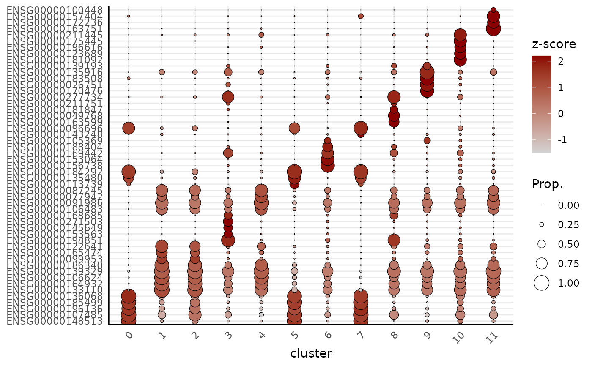
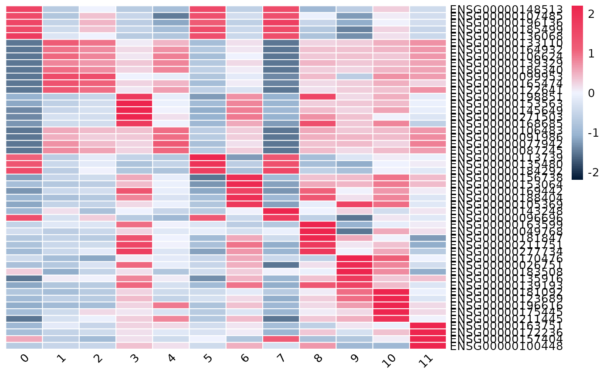

Dot plot or heatmap of the top marker genes per cluster.
Source:R/plotTopMarkers.R
plotTopMarkers.RdTakes the output of getMarkers and visualises the top n
marker genes of each cluster, either as a dot plot or a genes-by-clusters
expression heatmap. Genes are block-ordered by cluster (in the order of
names(markers)); a gene that is a top marker for more than one cluster
is shown once, under the first cluster it appears in.
Arguments
- markers
The named list returned by getMarkers (one data frame per cluster, gene names as row names).
- spe
The SpatialExperiment object the markers were computed from.
- n
Integer. Number of top markers to take from each cluster. Default 5.
- min.prop
Numeric in [0, 1]. Drop candidate markers whose detection rate (proportion of cells expressing) in their cluster is below this value before taking the top
n, so low-prevalence genes are skipped and back-filled from further down the ranking. Default 0 (no filtering).- type
Character. "dotplot" (default) or "heatmap".
- profile
Character. "pseudobulk" (default) or "cell"; see Details.
- cluster_name
Character. Column in
colData(spe)holding the cluster labels used inmarkers. Default "cluster".- assay
Name of the assay to use for expression. Only used when
profile = "cell"(pseudo-bulk always uses raw counts). Default "counts".- scale
Logical. Scale expression per gene (z-score across clusters for the colour). Default TRUE.
- range
Numeric. Lower and upper caps for the colour values; values outside are clamped (winsorised). A single value is taken as the upper bound. Default NULL picks
c(-1.5, 2.2)whenscale = TRUE(suited to z-scores) andc(-Inf, Inf)(no capping) otherwise.- cols
Custom colour palette. For a cell-level dot plot a gradient passed to plotDots; otherwise the full colour vector for the gradient (dot plot) or pheatmap (heatmap).
- dot.scale
Numeric. Scales the dot radius. See scale_radius. Default 6.
- ...
Further arguments passed to plotDots (cell-level dot plot) or pheatmap (heatmap).
Details
Two expression profiles are available via profile:
"pseudobulk" (default): per-cluster log-CPM from spe2PB + cpm - the same space the markers were tested in. Dot colour is (scaled) log-CPM; dot size is the proportion of cells expressing the gene.
"cell": Seurat-style cell-level summaries via plotDots (dot plot) or cell-level mean expression (heatmap).
Examples
data("xenium_bc_spe")
spe <- normalizeAssay(spe)
spe <- runPCA(spe)
#> Genes with 0 variance are excluded: ENSG00000135218 NegControlProbe_00002 NegControlCodeword_0504 NegControlCodeword_0509 NegControlCodeword_0510 NegControlCodeword_0511 NegControlCodeword_0512 NegControlCodeword_0516 NegControlCodeword_0517 NegControlCodeword_0518 NegControlCodeword_0519 NegControlCodeword_0520 NegControlCodeword_0522 NegControlCodeword_0526 NegControlCodeword_0527 NegControlCodeword_0530 NegControlCodeword_0536 NegControlCodeword_0537 BLANK_0030 BLANK_0163 BLANK_0165 BLANK_0212 BLANK_0221 BLANK_0230 BLANK_0237 BLANK_0311 BLANK_0361 BLANK_0365 BLANK_0382 BLANK_0384 BLANK_0387 BLANK_0388 BLANK_0391 BLANK_0393 BLANK_0397 BLANK_0399 BLANK_0404 BLANK_0406 BLANK_0410 BLANK_0411 BLANK_0418 BLANK_0425 BLANK_0432 BLANK_0447
spe <- findNbrsSNN(spe, dimred = "PCA")
spe <- getClusters(spe, resolution = 0.5)
markers <- getMarkers(spe)
plotTopMarkers(markers, spe, n = 5)

plotTopMarkers(markers, spe, n = 5, type = "heatmap")
